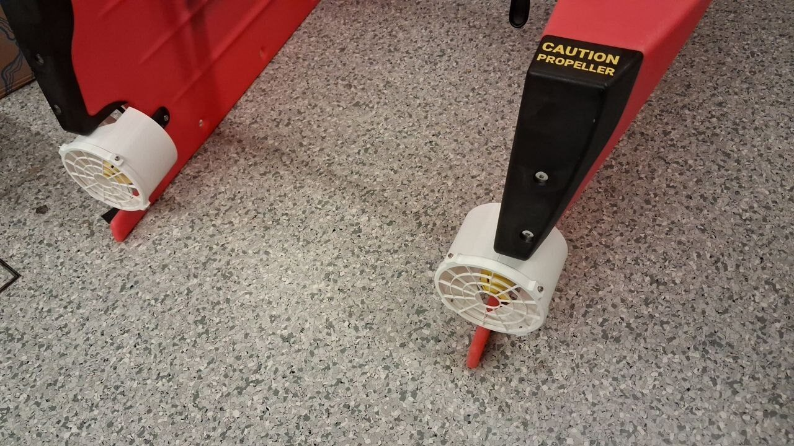
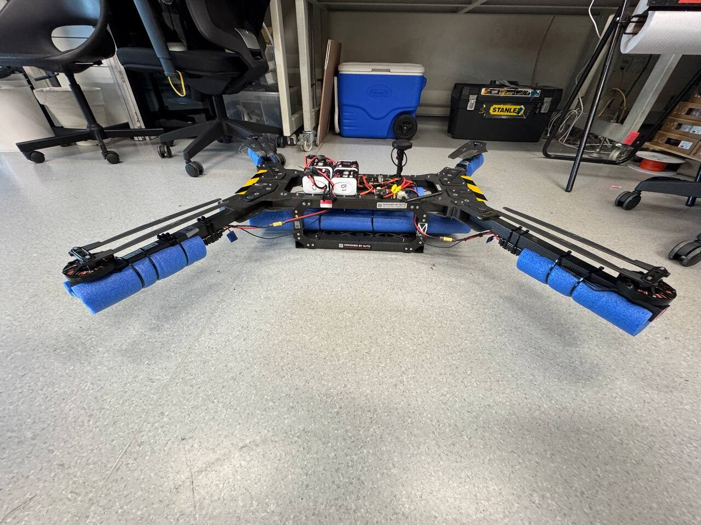
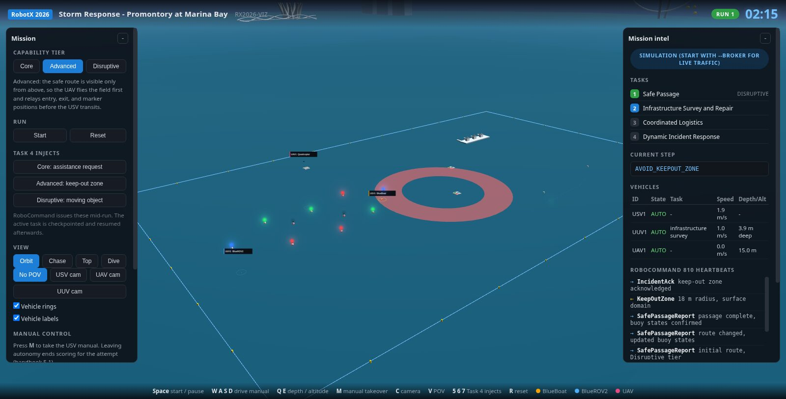

Team MARVL (RobotX 2026)
MARVL is the Multi-Agent Robotics Vision and Learning Lab at the Singapore University of Technology and Design. The team is entering the 2026 Maritime RobotX Challenge at Marina Bay with a surface vessel, an underwater vehicle and a quadrotor.
- 3vehicles, one in each domain
- 4mission tasks, Advanced tier target
- 63readiness requirements tracked
- 154automated tests on the ground station
Team introduction video
The team has twenty six students working on simulation, computer vision, planning, control, electronics, communications and the aircraft, with Prof. Malika Meghjani as advisor. This is the team introduction video for the 2026 challenge.
The mission
The 2026 scenario is a storm response at a coastal port. The four RobotX tasks are run as one operation, and each task needs more than one vehicle.
1. Safe passage
Ten buoys carry light beacons. At the Advanced tier the route can only be seen from above. The quadrotor reads the field, reports it to RoboCommand and sends the entry, exit and marker positions to the boat before the boat transits.
2. Infrastructure survey and repair
The ROV homes on the active pinger, follows the pipeline, classifies each segment as intact or damaged, and holds its magnetic probe on the damaged node. The repaired node then shows which resource it needs, and the quadrotor delivers it.
3. Coordinated logistics
The boat finds the green docking bay, docks, sprays the lit window until it turns green, then sends the delivery colour to the quadrotor.
4. Dynamic incident response
RoboCommand interrupts the run with an assistance request, a keep-out zone or a moving vessel. The affected vehicle acknowledges the message, responds, then resumes its task at the step where it stopped.
The vehicles
Three vehicles, each running ArduPilot, all reached through the same MAVLink interface. The ground station uses the same code for a simulated vehicle, a firmware build and the real hardware.
Surface
BlueBoat
A 1.2 m catamaran on ArduPilot Rover, with shrouded thrusters, a wireless kill switch and a 360 degree status light. It transits the safe passage, docks, sprays the window, and carries the surface link for the ROV.
- AutopilotArduPilot Rover
- Link to shoreWiFi HaLow, MAVLink
- Tasks1, 3, 4

Subsurface
BlueROV2
A six thruster ROV on ArduPilot Sub. It has no DVL, so it has no absolute position underwater and runs in depth hold mode instead of guided mode. The underwater software is designed around this.
- AutopilotArduPilot Sub, BlueOS companion
- CameraRTSP, 1280x720 at 15 fps
- Tasks2, 4

Air
22 inch quadrotor
Built in the lab on ArduPilot Copter, 6.8 kg in the delivery configuration, with foam flotation so it can be recovered after a ditching. It reads the buoy field from above, sends the route to the boat, and carries resource tins to the platforms.
- AutopilotArduPilot Copter
- Endurance18 min, land by 15
- Tasks1, 2, 3, 4

The ground station
The ground station runs the mission. It commands the vehicles over MAVLink, communicates with the judges over the RoboCommand protocol, and checkpoints every task so that an interruption costs a few seconds instead of the run.

Mission state machines
Three state machines run in parallel: one per vehicle, one per task, one for the mission. The task machine handles suspend and resume, so Task 4 uses the same mechanism as any other interruption.
Protocol testing
The operator console ran the handbook's run start sequence against RoboNation's rc-test server. The log we submitted was written by their decoder.
Course model
Marina Bay, the buoy field, the pipeline and the docking bays are modelled to the handbook's build specifications. We use the model to rehearse a run before the hardware is on the water.
Progress so far
Proof of readiness
Packages for the boat, the ROV, the aircraft and communications were submitted in the handbook 3.1 window: autonomous runs, kill switch drawings, failsafe documentation and a run start log from RoboNation's test server.
Flight and water testing
Manual and autonomous flights, geofence and ceiling holds, a link loss failsafe, a buoyancy test in the pool, and autonomous operations on the boat.
Simulation
The vehicle firmware runs software in the loop behind an emulated HaLow radio, and a scripted mission checks 25 stages end to end before the vehicles go in the water.
Support
The team is based in the MARVL lab at SUTD and uses platforms from the RoboNation and Blue Robotics granted platform programme.
Singapore University of Technology and Design
Host university. Workshop, pool and field access, and staff support for the airworthiness and safety paperwork.
MARVL Lab
Multi-Agent Robotics Vision and Learning Lab. Provides the vehicles, the test equipment and the lab's marine robotics experience.
Blue Robotics
BlueBoat and BlueROV2 platforms through the RobotX granted platform programme, and spare parts for both.
We also thank Prof. Foong Shaohui of the MRS Lab, and the SUTD student clubs SOAR and UWU, for their support this season. Acknowledgements and contact details.